Oil geopolitical risk: off the March peak, still high. Iacoviello's oil-related AI-GPR read 752 in September, below the March 2026 record of 1,844 but above the 2003 Iraq-war (515) and 2022 Ukraine (736) readings. Source: https://www.matteoiacoviello.com/ai_gpr.html
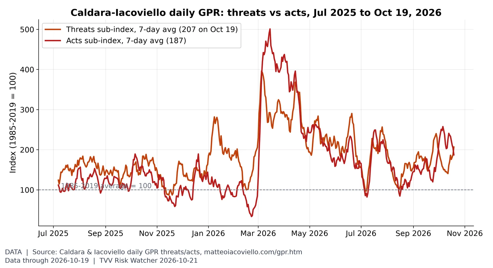
Threats vs acts. In the week to Oct 19 the threats sub-index averaged 207 and the acts sub-index 187 (2026 highs of the 7-day averages: threats 396 on Mar 5, acts 501 on Mar 15). Source: https://www.matteoiacoviello.com/gpr.htm
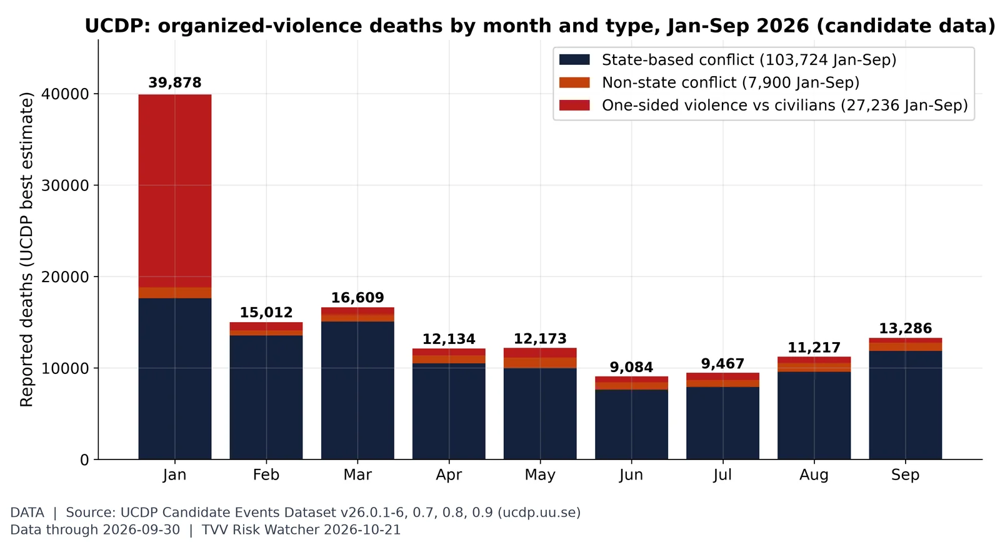
Violence against civilians in context. UCDP's candidate events record 138,860 deaths Jan-Sep 2026, 27,236 of them in one-sided violence against civilians (top: Iran 19,901, Nigeria 1,884, DR Congo (Zaire) 1,357). January's 39,878 is mostly UCDP's estimate for the Iranian government's Jan 8 killings of civilians (state, not terrorist, violence); September 13,286. Candidate data are preliminary. Source: https://ucdp.uu.se/downloads/index.html#candidate
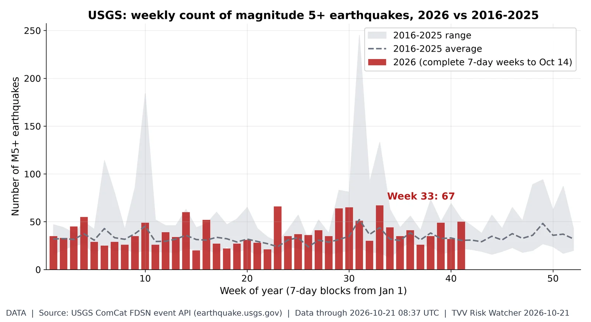
Weekly M5+ quake count. 2026 has 1,624 M5+ quakes through Oct 21 vs a 2016-25 average of 1,392 by this date (range 1,191-1,890); the busiest 2026 week was week 33 with 67. Source: https://earthquake.usgs.gov/fdsnws/event/1/
Solar activity proxy: F10.7 flux. The 10.7 cm solar radio flux, a standard proxy for solar activity and upper-atmosphere drag on satellites, was 120 sfu on Oct 20 (27-day average 113; window range 92-156). Source: https://www.swpc.noaa.gov/phenomena/f107-cm-radio-emissions
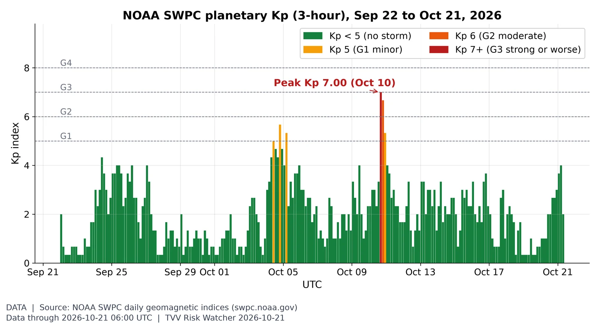
Geomagnetic activity, last 30 days. Kp peaked at 7.00 on Oct 10 in this 30-day window; Oct 20 maxed at Kp 3.00 (UTC day), and NOAA's latest 3-day forecast (issued 2026 Oct 21 0030 UTC) has a peak Kp 4.67 (NOAA Scale G1) on Oct 21. Source: https://www.swpc.noaa.gov/products/planetary-k-index
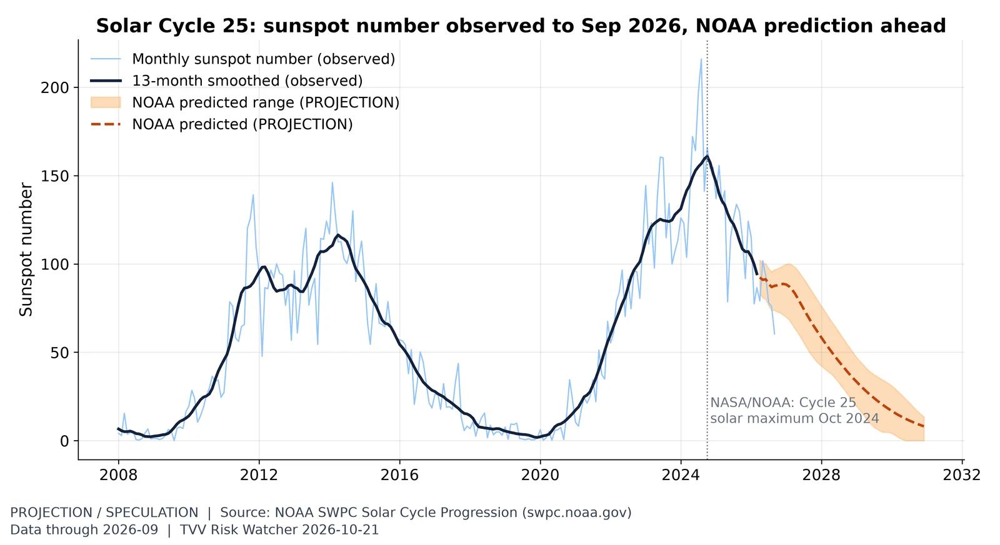
Solar Cycle 25 progression. The monthly sunspot number was 60 in September, past the Oct 2024 maximum; declining phases can still bring large flares and CME storms such as Oct 10's. Source: https://www.swpc.noaa.gov/products/solar-cycle-progression
Yield curve after inversion. The 10Y-2Y spread is +0.33 pt on Oct 20 (Treasury: 10Y 5.12%, 2Y 4.79%), positive after the 2022-24 inversion; un-inversion preceded past recessions. Source: https://fred.stlouisfed.org/series/T10Y2Y
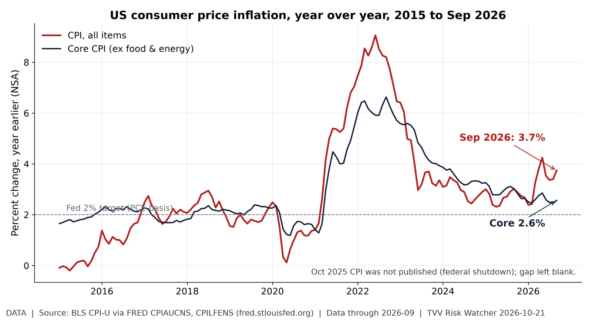
Energy-led inflation gap. Headline CPI was 3.7% year over year in September (from 3.4% in August) while core was 2.6%: energy is driving the gap. Source: https://fred.stlouisfed.org/series/CPIAUCNS
Critical Water Shortage, US view. 53.7% of the contiguous US was in drought (D1-D4) on the map valid Oct 13, higher than in 93% of weeks since 2000; 9.8% was extreme or worse. Source: https://droughtmonitor.unl.edu/DmData/DataDownload.aspx
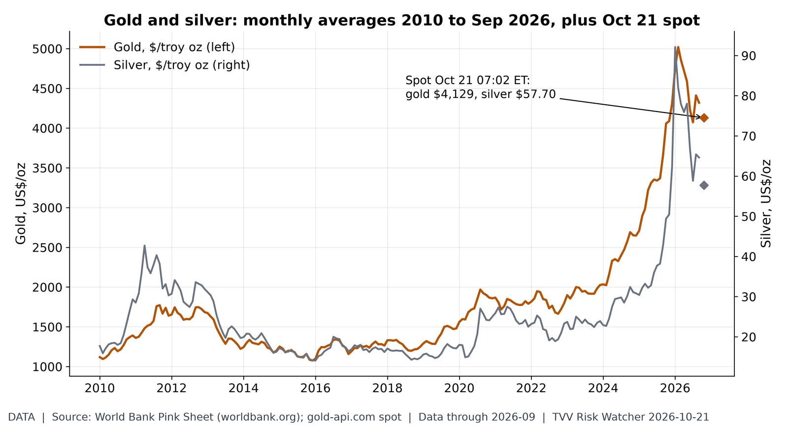
Haven metals. Gold averaged $4,319 in September (2010-26 monthly high $5,020, Feb 2026) and silver $64.60; gold-api.com spot at 07:02 ET Oct 21 is gold $4,129, silver $57.70. Source: https://www.worldbank.org/en/research/commodity-markets
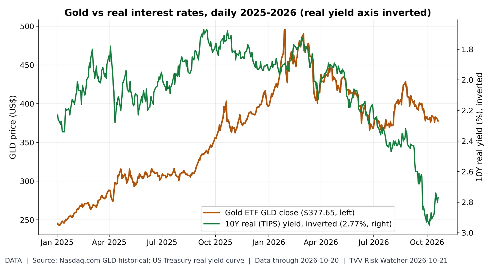
Gold vs real rates. GLD closed at $377.65 on Oct 20, 23.8% below its Jan 29, 2026 high of $495.90; the 10Y real yield is 2.77%. 2026 daily correlation of GLD returns with real-yield changes: -0.29. Source: https://www.nasdaq.com/market-activity/etf/gld/historical
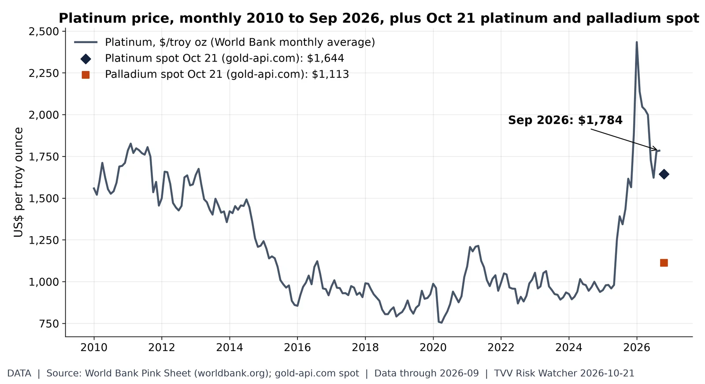
Platinum group metals. Platinum averaged $1,784/oz in September (2010-26 high $2,434, Jan 2026); Oct 21 spot quotes at 07:02 ET are platinum $1,644 and palladium $1,113. Source: https://www.worldbank.org/en/research/commodity-markets
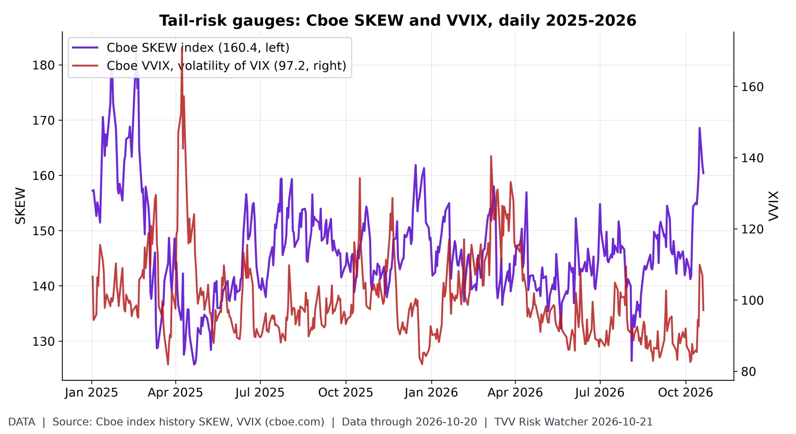
Is anyone paying for crash protection?. On Oct 20 SKEW closed at 160.4 (2026 range 126.4-168.6) and VVIX at 97.2 (2026 high 140.4 on Mar 6). Higher SKEW = costlier far-out-of-the-money S&P puts. Source: https://www.cboe.com/us/indices/dashboard/skew/
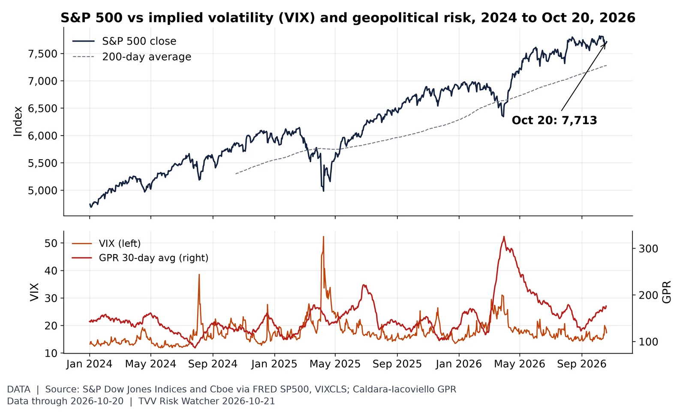
Stocks vs volatility and geopolitical risk. The S&P 500 rose 0.28% to 7,712.57 on Oct 20, +5.9% vs its 200-day average, with VIX at 17.31; the GPR 30-day average was 176 on Oct 19. Source: https://fred.stlouisfed.org/series/SP500
Recession odds. Traders price a 7.5% chance of a US recession by end-2026 (market rules define it), vs a high of 12.5% on Sep 24 in the API history window (hourly since Sep 20). Source: https://polymarket.com/event/us-recession-by-end-of-2026
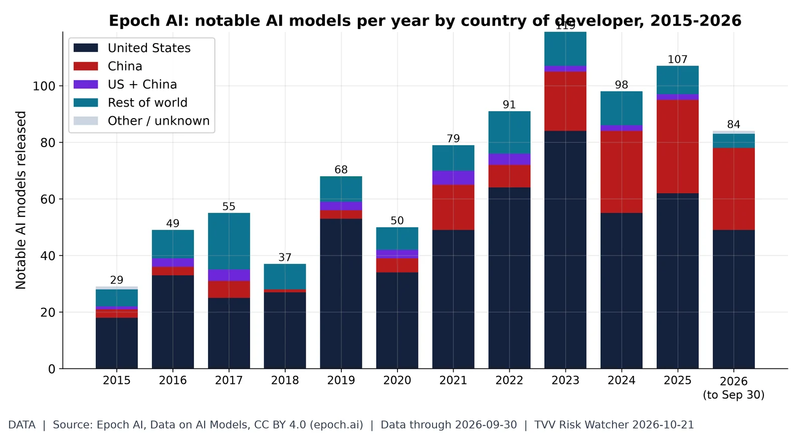
The US-China AI model race. Epoch's database lists 84 notable AI models for 2026 to Sep 30: 49 from US organizations and 29 from Chinese ones (2025: 62 US, 33 China, 107 total). Recent years fill in as Epoch adds models. Source: https://epoch.ai/data/ai-models